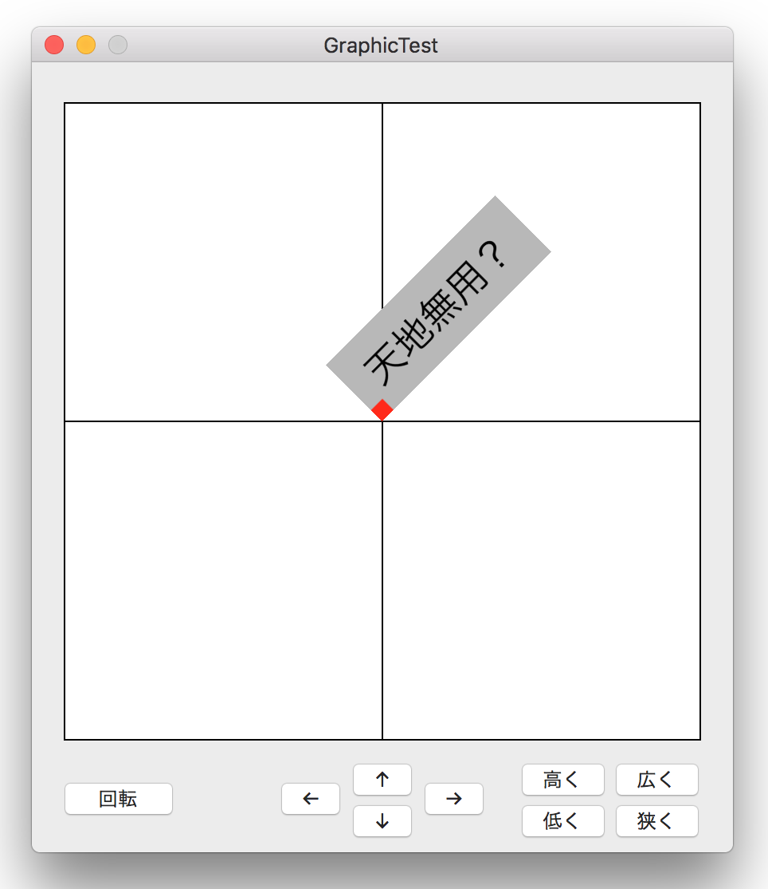

ビューを回転する

画像をクリックすると動画になります。
NSViewクラスの frameRotationメソッドを使用すればビューオブジェクトを任意の角度に回転することができる。ビューに表示される文字列も同じように回転する。
ビューは回転した形を維持したまま、原点を起点に x軸方向・y軸方向に移動する。ビューの大きさは回転の角度に関わりなく拡大・縮小する。
メソッドの呼び出し方法
ソースコード
LotateView.swift 親ビュー・子ビューを回転させる
ShapeView.swift 回転する子ビュー